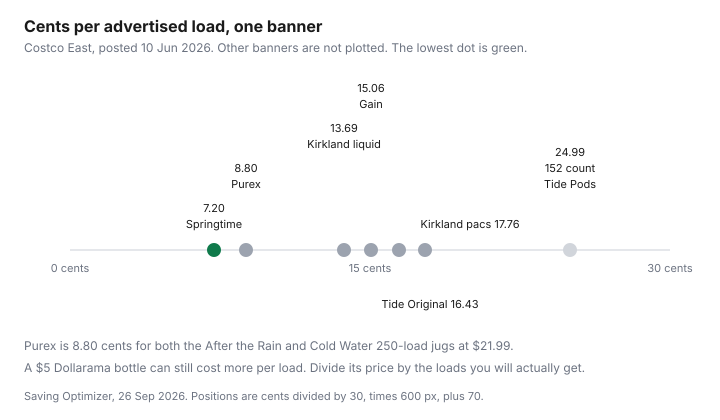

Household Items and Supplies · Canada
Dollarama vs Walmart vs Costco for Household Supplies: What to Buy Where in Canada
The dollar store used to mean one price. It does not. A household that still shops Dollarama, Walmart, Giant Tiger, and Costco as if each banner had a personality ("cheap," "fine," "bulk") will overpay on the aisle where the personality is wrong. The test is the unit. The banner is just where the tag is hanging.
This page prices what it could open. Dollarama's range is from the company's own annual information form. Walmart's pricing model is from Walmart Canada's news release. Costco's household units are from the Costco East list posted 10 Jun 2026. Giant Tiger's site confirmed a flyer banner and did not hand over a toilet-paper tag. Where a cell is empty, it is empty on purpose. The cart-split guide is the food version of the same trip.
Key takeaways
- Dollarama's annual information form dated 14 Apr 2026, for the year ended 1 Feb 2026, says Canadian prices range from $0.25 to up to $5.00. Private-label products were 65 percent of Canadian-segment sales and national brands 35 percent.
- A price under $5 is not a unit price. Kirkland liquid on the 10 Jun 2026 Costco East list was 13.69 cents per advertised load. Hold the dollar-store bottle to that kind of division before you call it a deal.
- Walmart Canada, 15 Sep 2025, describes everyday low prices as the regular price, with rollback offers that go lower. The release's "more than $450" line is Walmart's statement about a family grocery shop, not a finding about detergent.
- On the same Costco list, Palmolive dish liquid was $2.34 per litre and Kirkland dish liquid was $4.13 per litre. Bulk does not win every row inside the warehouse.
- The comparison table publishes the rows with a price. Dollarama and Giant Tiger shelf prices were not opened, so they are a method, not a column of invented cents.
Dollarama's price points in 2026 (up to $5) and why unit size matters
Dollarama's annual information form, dated 14 Apr 2026, states the information as at 1 Feb 2026 unless noted. For the Canadian segment it says prices range from $0.25 to up to $5.00. Private-label and national-brand products were 65 percent and 35 percent of fiscal 2026 sales. General merchandise was about 38 percent of those sales and includes party supplies, household wares, and kitchenware. Consumable products were about 49 percent and include paper, plastics, foils, and cleaning supplies. The corporation operated 1,691 Canadian stores as at 1 Feb 2026. The Australian figures in the same filing are a different price range. Do not import them.
The $5 cap is a cap on the sticker, not on the unit. A 500 mL cleaner at $4.00 is $8.00 per litre. Mr. Clean on the Costco East list was $2.59 per litre. The warehouse jug is the lower litre if you will finish 5.2 L. The Dollarama bottle is the lower trip if you need 500 mL and you do not have a litre of storage. Write the size. Then divide. A multiple-unit hang tag, two sponges at $4, is still a unit price: $2 a sponge, compared with the Scotch-Brite pack you would otherwise buy. The AIF does not print those sponge prices. The method does.
Buy at the dollar store: party supplies, storage bins, kitchen gadgets, gift wrap, cleaning tools
Buy the thing you will use once or finish this month, where a low sticker matters more than a giant count. The AIF's general-merchandise list is the map of what the chain says it sells: party supplies, stationery and giftware, household wares, kitchenware, hardware. A gift bag, a spare bin that fits a shelf, a spatula, a roll of gift wrap for a birthday this week. These are purchases where the alternative is a larger pack you will store until the next birthday. The dollar store's advantage is the small count, as long as the item does the job. A bin that cracks is not a saving. Take it back if the store's own policy allows, and do not build a kitchen out of the weakest tool on the hook.
Cleaning tools, not cleaning liquids, are the same pattern. One sponge, one brush, a pair of gloves. The Costco list priced Scotch-Brite heavy-duty sponges, 24 at $18.49, which is 77 cents a sponge, and zero-scratch sponges, 24 at $14.97, which is 62 cents a sponge. A Dollarama sponge only wins if its price per sponge is under the pack you would actually buy. This draft did not open a Dollarama sponge tag, so the 62 cents is the benchmark, not a verdict. Gift wrap has the same shape as paper towels: price per metre if the length is printed, not "it was only $3.50."
Skip at the dollar store: batteries, some detergents, and anything cheaper per unit in bulk
Skip means "do the division, and leave it if you lose." It does not mean a researched ban. No Dollarama battery price and no Dollarama detergent price was on a page opened 26 Sep 2026. The Costco cleaning list used here did not include a battery SKU either, so this page will not invent cents per battery at any banner. When you are in the aisle, price divided by the count on the card is the whole test. A four-pack at $4.00 is $1.00 a battery. A sixteen-pack at $12.00 is 75 cents. The $4 card is the false saving.
Detergent is the same test with a load count. Kirkland liquid, 146 loads at $19.99, is 13.69 cents per advertised load on the 10 Jun 2026 list. A $5 Dollarama jug wins only if it delivers more than $5.00 divided by $0.1369, which is about 36 advertised-equivalent loads, at a dose you will actually pour. If the bottle says 20 loads, the $5 jug is 25 cents a load and the warehouse wins, provided you will use 146 loads. If the bottle does not say, do not guess. The detergent guide is the full division, including Tide and Gain on that list. Springtime Ultra, 250 loads at $17.99, was 7.20 cents on the same list. A dollar-store bottle has to beat the jug you will really buy, not a jug you will not join a warehouse to get.
Walmart and Giant Tiger middle ground: everyday low prices vs flyer rollbacks
Walmart Canada's release of 15 Sep 2025, "This is not a sale," says everyday low prices are the price you can expect without waiting for a promotion, in store and online. It also says rollback offers take those prices lower, and that since February the company had lowered the everyday price of hundreds of staple items. The release says a family of four can save more than $450 a year on the weekly grocery shop versus any other major grocery store. That sentence is Walmart's comparison, about groceries, in Walmart's words. It is not a measurement of paper towels, and it is not an independent audit this guide re-did. Use it as a description of the model: a stable tag, plus a rollback that is still a kind of sale. The household move is to photograph the tag, including any unit price the shelf prints, and compare it with the Costco unit in the table. Walmart.ca product pages did not return prices on 26 Sep 2026, so Great Value is not given a number here.
Giant Tiger's homepage, opened 26 Sep 2026, presents the banner as a low-price flyer store. It did not produce a dated household unit price in the text captured. Treat Giant Tiger as a flyer stop. If this week's flyer lists a cleaner or a paper pack with a count, divide. If it lists a rollback against Walmart's everyday tag, the lower unit price wins for the item you will finish. No Frills, FreshCo, Food Basics, and Walmart is the grocery rotation. Household goods can ride along. They should not inherit a grocery slogan.
Costco: when bulk household buys win and when they rot in the basement
Bulk wins when the unit price is lower and the last sheet or the last load gets used. On the 10 Jun 2026 list, Kirkland bathroom tissue at 21.04 cents per 100 sheets beat Charmin Ultra Soft at 54.15 cents, and Kirkland paper towel at $1.30 per 100 sheets beat Bounty Plus at $2.98. Those are wins if the rolls fit the apartment. They are losses if they sit in a basement and take on damp, or if you buy a storage locker to hold them. The bulk-without-waste guide is written for food and the habit transfers: split, share, or do not buy.
Bulk loses inside the building when a different jug on the same pallet is cheaper per litre. Palmolive Advanced, 4.27 L at $9.99, is $2.34 per litre. Kirkland dish liquid, 2.66 L at $10.99, is $4.13 per litre. The store brand is not the automatic household winner. Membership itself is a separate fee. Gold Star was $65 and Executive $130, plus tax, on Costco's membership conditions dated 1 Aug 2026. Whether the fee is worth it is the couples guide and the Food guides. This page does not re-derive it.
20-item unit-price comparison table and a 'where to buy' cheat sheet
Twenty staples was the target. The verified subset is shorter, because Dollarama, Walmart product pages, and Giant Tiger did not yield shelf prices on 26 Sep 2026. Publishing blanks as if they were prices would be a fiction. The rows below are the ones with a source. Add your own tags in the empty habit, not in this article.
| Item | Store and date | Unit cost | Cheapest on the prices opened |
|---|---|---|---|
| Kirkland liquid detergent, 146 loads, $19.99 | Costco East, list posted 10 Jun 2026 | 13.69 cents per advertised load | Lower than Tide Original and Gain on that list. Springtime Ultra was 7.20 cents if you will use that product. |
| Gain Original, 146 loads, $21.99 | Costco East, 10 Jun 2026 | 15.06 cents per advertised load | Between Kirkland and Tide Original. |
| Tide Original, 146 loads, $23.99 | Costco East, 10 Jun 2026, $6 instant saving the list said expired 5 Jul 2026 | 16.43 cents per advertised load | Higher than Kirkland liquid on this list. |
| Kirkland bathroom tissue, 30 times 380 sheets, $23.99 | Costco East, 10 Jun 2026 | 21.04 cents per 100 sheets | Lowest of the three tissue packs priced. Cashmere was 21.49 cents. |
| Kirkland paper towel, 12 times 160, $24.99 | Costco East, 10 Jun 2026 | $1.30 per 100 sheets | Lower than Sponge Towels at $1.73 and Bounty Plus at $2.98. |
| Kirkland dish liquid, 2.66 L, $10.99 | Costco East, 10 Jun 2026 | $4.13 per litre | Loses to Palmolive on the same list and to the No Frills PC line below. |
| Palmolive Advanced, 4.27 L, $9.99 | Costco East, 10 Jun 2026 | $2.34 per litre | Lowest dish-liquid litre on the Costco rows opened. |
| PC dish soap, 638 or 739 mL, $1.00 | No Frills, Toronto Pacific, flyer 24 to 30 Sep 2026 | $1.57 per litre at 638 mL, $1.35 at 739 mL | Lower litre than the Costco dish liquids priced. Confirm which bottle size the store rings up. |
| No Name white vinegar, 1 L, $0.99 | No Frills, Toronto Pacific, flyer 24 to 30 Sep 2026 | $0.99 per litre | A vinegar price, not a cleaner price. See the DIY guide before you use it on stone. |
| Kirkland large garbage bags, 100, $14.99 | Costco East, 10 Jun 2026 | 14.99 cents a bag | No other banner's bag was priced, so there is no winner across stores. |
| Banner | Buy | Skip until you divide |
|---|---|---|
| Dollarama | Small, finished goods the AIF lists in general merchandise: party supplies, a bin, a kitchen tool, gift wrap, a cleaning tool you will use up. | Any liquid, battery, or paper good whose unit price you have not calculated. The sticker cap is $5 in the fiscal 2026 filing, not a unit-price promise. |
| Walmart | The everyday tag, when a rollback or the regular price beats the unit you already wrote down. The 15 Sep 2025 release is the model, not a product list. | A trip made only because of the grocery slogan. Household unit prices were not on the release. |
| Giant Tiger | This week's flyer, when the count and the price are both printed. | An assumption that the banner is cheaper than Walmart. No unit price was captured from the homepage. |
| Costco | The rows above where the unit price won and the pack will be finished. Tissue and towels did that against the name brands on the 10 Jun 2026 list. | Kirkland dish liquid against Palmolive on that list. Any pack that needs a locker. Membership math stays on the Food guides. |

The store-brand guide and the Costco aisle guide use these same dated units. Update the note when the tag changes. A June list is not a September price.
Sources & date stamps
- Dollarama Inc. annual information form for the year ended 1 Feb 2026, dated 14 Apr 2026, opened 26 Sep 2026. Canadian prices from $0.25 to up to $5.00. Private label 65 percent and national brands 35 percent of fiscal 2026 Canadian-segment sales. General merchandise about 38 percent, consumables about 49 percent, including paper, plastics, foils, and cleaning supplies. 1,691 Canadian stores as at 1 Feb 2026.
- Walmart Canada news release, 15 Sep 2025, opened 26 Sep 2026. Everyday low prices described as not a sale. Rollbacks can go lower. Hundreds of staple items lowered since February. Family-of-four grocery claim of more than $450 a year is Walmart's statement.
- Giant Tiger homepage, opened 26 Sep 2026. Flyer positioning. No household unit price captured.
- Costco East list posted 10 Jun 2026, and the No Frills flyer 24 to 30 Sep 2026, Toronto Pacific, for the unit costs in the table. Costco membership conditions dated 1 Aug 2026: Gold Star $65 and Executive $130, plus tax. Scotch-Brite packs: 24 heavy-duty at $18.49 and 24 zero-scratch at $14.97.
Frequently asked questions
Is Dollarama always cheapest for household items?
No. Dollarama's fiscal 2026 annual information form, dated 14 Apr 2026, says Canadian prices range from $0.25 to up to $5.00. A $4 bottle can still cost more per load than a warehouse jug. On the Costco East list posted 10 Jun 2026, Kirkland liquid was 13.69 cents per advertised load. A Dollarama detergent only wins if its price divided by the loads you will get is under the number you are comparing it with.
What is Dollarama's highest price in 2026?
The annual information form for the year ended 1 Feb 2026 says prices range from $0.25 to up to $5.00 for the Canadian segment. That is the corporate range in that filing, not a promise that every aisle still shows every point. This guide did not find a sourced claim about a $6 price point, so it does not make one.
What should I never buy at the dollar store?
Nothing on this page is a permanent ban. Skip a Dollarama item when the unit price loses. Batteries and detergent were not priced at Dollarama on a page opened 26 Sep 2026, so they are not declared losers. They are the first items to divide: price divided by batteries in the pack, or price divided by loads. If that unit loses to a pack you will finish, leave it.
Is Giant Tiger cheaper than Walmart?
Not answered with a number here. Giant Tiger's homepage, opened 26 Sep 2026, did not yield household unit prices. Walmart Canada's 15 Sep 2025 news release describes everyday low prices plus rollback offers, and it makes a grocery claim this page does not copy onto paper towels. Compare this week's tags. A flyer rollback can beat an everyday price, and the reverse is also true.
When is Costco bulk a false saving?
When you will not finish it, or when a smaller pack's unit price is lower. Palmolive Advanced on the 10 Jun 2026 Costco list was $2.34 per litre. Kirkland dish liquid on the same list was $4.13 per litre. The name brand won that row. A 30-roll paper pack you cannot store is the other false saving. The couples and bulk-waste guides do the membership and the food version.